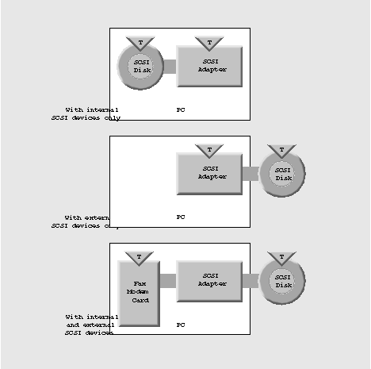

NEXTSTEP In Focus, Fall 1993 (Volume 3, Issue 4).
Copyright ©1993 by NeXT Computer, Inc. All Rights Reserved.
Using SCSI in a
PC World
Aaron Morse
The SCSI standard helps you to attach a variety of devices to workstations and personal computers. To set up SCSI devices on your computer, you must complete two important steps: Set device ID numbers and terminate the SCSI chain.
Best in the West
Some would say that SCSI in the PC environment is like the wild stallion from an old Western--difficult to tame but an unmatched mount once conquered. If you're unfamiliar with the intricacies of PC hardware, you might be a little worried the first time you assemble your system's SCSI bus. However, once you know the basics, you'll probably find that SCSI handles like a dependable trail pony--mostly.
What is SCSI?
Small Computer Systems Interface (SCSI) is an industry standard that defines mechanical, electrical, and functional requirements for connecting computers and intelligent peripheral devices. It originated in the early 1980s from the previously proprietary standard Shugart Associates Systems InterfaceTM (SASI). The specification calls for an 8-bit data bus where each peripheral has its own adapter, and where each adapter has some degree of intelligence about the device it controls. Locating device-specific information in the adapter allows the bus to be generalized and support many types of peripheral devices--scanners, hard disks, optical disks, and even network adapters can communicate through a SCSI bus.
The current SCSI standard is SCSI-2, an update of the original standard, SCSI-1. The update is pretty much finished but hasn't been formally approved. SCSI-2 defines some new devices types and clarifies items that were vague in SCSI-1. It also mandates some items that were previously optional. In addition, SCSI-2 includes optional features that can allow for transfer rates as high as 10 megabytes per second. (Theoretically, the maximum data transfer rate of SCSI-1 is 5 megabytes per second.) In general, SCSI-2 should make devices easier to set up.
SCSI setup
The biggest issue most people usually face regarding their SCSI devices is how to set up a PC to use them. There are two basic things to set up for a computer with a SCSI bus: SCSI ID numbers and terminators.
SCSI ID numbers
You assign each device on a SCSI bus--hard disk, printer, tape drive, and so on--a SCSI ID number. The numbers range from 0 to 7. Typically, the adapter card inside the PC occupies SCSI ID number 7. This leaves seven numbers for other devices.
Like workstations, but different
If you're familiar with workstations, you probably know that the device with the lowest SCSI ID number is the startup device. In the PC environment this is still true, but many SCSI adapters expect the boot drive to be at SCSI ID number 0; the system may fail to start up if ID numbers start higher than 0.
Workstation users also generally expect their SCSI adapter to poll the bus at each device number and find every attached device. Again, there is a slight difference in the PC world. Most PC SCSI adapters seem to assume that SCSI devices are numbered sequentially, without gaps between devices. We've found it's safest not to skip SCSI device IDs.
Different devices, different methods
Each device on your SCSI bus probably requires that you set its SCSI ID number with a different method. For external devices the process is pretty straightforward--there's usually a dial or push-button switch on the back of the device. On these devices, simply make sure the unit is turned off and pick the lowest unoccupied number.
Internally installed devices can be a little more difficult to set up, so refer to the owner's guide for each device before proceeding. One common scheme is that the device has three sets of jumper pins labeled A0, A1, and A2. The device uses these pins to get its SCSI ID number, reading their settings as a three-digit binary number. For example, depending on whether it's on or off, the jumper labeled A0 adds either 0 or 1 to the device's SCSI ID number. Likewise, A1 adds 0 or 2, and A2 adds 0 or 4. As a reference, Figure 1 shows how to set the jumper block to get each SCSI ID number.
| SCSI ID | Jumper Block Settings |
| Number | A2 | A1 | A0 |
| Off | Off | Off | |
| Off | Off | On | |
| Off | On | Off | |
| Off | On | On | |
| On | Off | Off | |
| On | Off | On | |
| On | On | Off | |
| On | On | On |
Figure 1: SCSI jumper settings
SCSI termination
The next step in setting up a SCSI bus is terminating it. It's not as scary as it sounds if you do it properly. However, incorrect SCSI termination may wreak havoc on your data.
Think of a SCSI bus as a single chain that connects the devices. A correctly terminated SCSI bus has terminating resistors at both ends of the chain--and nowhere else.
The SCSI adapter card is just like another device in the chain. Connecting only internal or only external SCSI devices leaves the SCSI adapter at one end of the chain, while connecting both internal and external devices puts the SCSI adapter somewhere in the middle. Thus when you use only internal devices or only external devices, you have to terminate the SCSI adapter itself.
Inside or out
For some adapters, like the Adaptec 1542C, you use configuration software to enable and disable termination. This kind of termination is called "active termination." In some cases you access this software with DOS's DEBUG.EXE utility. Other adapters run the setup software when you turn on the computer. Still others have you use a special program that runs under DOS. In any case, the configuration software resides on the adapter card--it's not part of NEXTSTEP. Note that running this configuration software terminates only the SCSI adapter, so you must still terminate the other end of the SCSI chain.
For many other adapters, you physically modify the adapter card to change its termination. Most SCSI adapters come with termination enabled. There are usually three ceramic terminating resistors attached to the adapter card, close to the internal SCSI bus connector. You usually remove these resistors by gently pulling them from their sockets. Again, carefully read and follow all of the instructions provided with the adapter before attempting to do this. Excessive force, incorrect procedures, and static electricity can cause severe damage.

Figure 2: When to terminate a SCSI adapter
Planning ahead
We recommend that you remove the factory-installed ceramic terminating resistors before you install the adapter. Then to terminate the adapter, simply attach an external SCSI terminator to the external SCSI connector. This way you avoid the hassle of taking your PC apart if you later want to attach additional external SCSI devices.
External SCSI termination resistors are a standard item found in any computer store. Be sure to buy a spare.
Common SCSI setup problems
Problems when installing a new SCSI device almost invariably have to do with either improper termination or conflicting SCSI ID numbers. Triple-check these two areas before looking further for culprits.
If you're sure that the SCSI bus is properly terminated and no SCSI ID numbers conflict, check for other common problems. First, make sure that the startup device is assigned SCSI ID number 0. Also check to see if you're using a bad cable: Borrow a cable that's known to work and substitute it for each of your cables, one by one.
Also, make sure the startup disk has 512 bytes per block; if it doesn't, you can't use it to start up a PC. Correcting this problem requires low-level formatting--instructions and software for low-level formatting come with most SCSI adapters. Be aware that low-level formatting erases any data previously on the drive.
Giddyup!
Those are the SCSI basics. Don't forget to carefully read the documentation that comes with any SCSI device you use, and read the NeXTanswers information on each device and on your system as a whole. Happy trails!
Aaron Morse manages NeXTanswers. He can be reached by e-mail at Aaron_Morse@next.com.
The promise of RAID
One enticing advantage of SCSI is that it makes it easier to implement Redundant Array of Inexpensive Disks (RAID) systems. RAID technology can dramatically increase data throughput to the disk subsystem, avoiding one major bottleneck to system speed.
A RAID system works like this: It breaks each chunk of data into component pieces and stores them across multiple disks. For example, a system that uses eight different disks could write one bit from each byte to each disk. It could then write the data to the eight disks simultaneously. Thus theoretically in the same time it would take a single disk to store a single byte, the eight disks could store eight bytes.
Additionally, a RAID system's adapter can apply algorithms to individual bytes to detect and even correct errors. So if a single disk on the array fails, the adapter can recognize the problem and derive the missing data. A sophisticated RAID adapter can even rebuild a duplicate of the damaged disk to a backup disk on the fly.
Therefore, a well-designed RAID disk subsystem can provide greater throughput, fault tolerance and correction, and reliability than a single-disk system. NeXT will be experimenting with RAID support under NEXTSTEP using a Distributed Processing TechnologyTM (DPT) adapter later this year.--AM